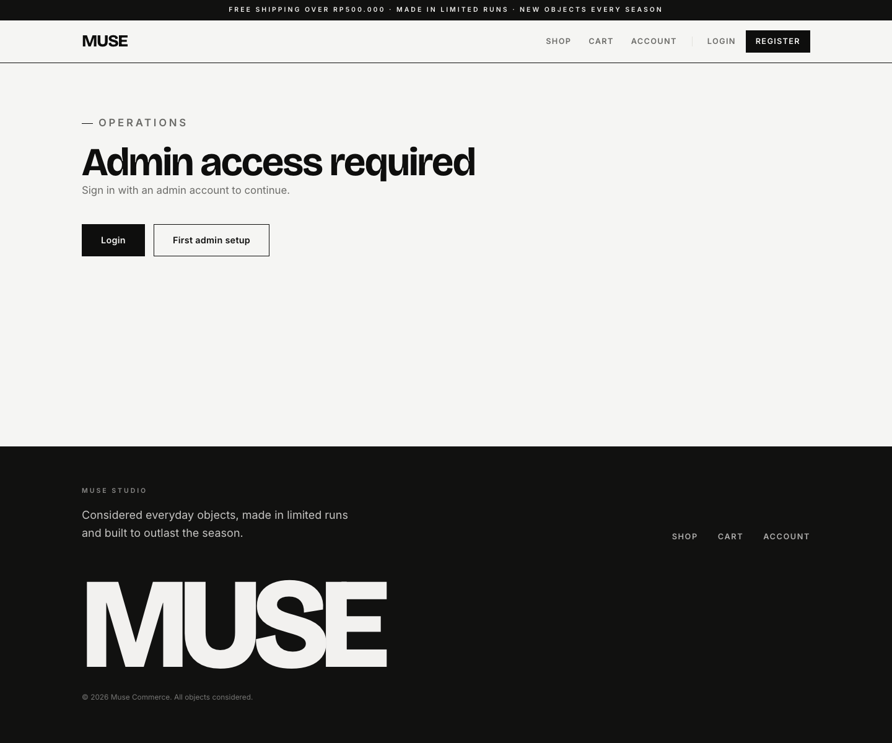

Admin Requirement
Redesign admin screens into a dense MUSE operations workspace: compact module navigation, KPI strips, table-first data, thin-border panels, calm forms, media pickers, and consistent status badges. Admin should not become a marketing page.
The captured current admin screenshot is the protected access state because no admin session was used. The implementation inventory comes from the admin route code and shared admin components.
Current Admin And Reference Density

Differences To Resolve
| Area | Current admin | Reference behavior | Required MUSE change |
|---|---|---|---|
| Shell | Admin routes sit inside the public root shell. | Admin needs utility density, not storefront promotion. | Build AdminShell variant that shares tokens but avoids public marketing footer dominance. |
| Module nav | admin-tabs generated from adminModules. |
Compact tabs/sidebar with active state and no visual noise. | Restyle and optionally move to sticky side/top module navigation. |
| Dashboard | Dashboard cards show fulfillment, recovery, low stock, failed emails. | Operational overview should be scannable with small KPI numbers. | Build AdminKpiBar and compact list cards. |
| Tables | Some modules are panel/form/list based. | Admin should use dense tables for repeated records. | Build AdminDataTable for products, inventory, orders, media, coupons, emails. |
| Forms | Panel, TextField, TextArea, media selectors exist. |
Forms should be compact, grouped, and consistent. | Keep helpers but wrap them in AdminFormSection and shared actions row. |
| Status | StatusBadge used across admin/order views. |
Status should be calm and readable without dominating rows. | Restyle badges to small neutral pills with semantic tints. |
Component Requirements With Crops

AdminShell
Admin-specific layout with compact top bar, module nav, content width, and no oversized public footer.
- Already have
AdminModulePage, root shell,adminModules.- Get rid
- Public storefront footer dominance on admin pages.
- Need
- Admin header, active module nav, workspace account context.
AdminDataTable
Reusable dense table with columns, actions, empty state, loading state, filters, and row status.
- Already have
- Admin list data across modules.
- Get rid
- Repeated ad hoc list/table markup per route.
- Need
- Column API, action slots, row links, responsive collapse.

AdminModuleNav
Compact tabs or sidebar built from adminModules with active module state.
- Already have
admin-tabsandadminModules.- Get rid
- Overly large tab spacing if it competes with content.
- Need
- Mobile overflow, active indicator, optional grouping later.

AdminFormSection
Shared thin-border form section with heading, helper text, compact fields, and action row.
- Already have
Panel,TextField,TextArea.- Get rid
- Inconsistent panel spacing across modules.
- Need
- Section description, two-column field grid, save/cancel/action slots.

AdminMediaPicker
Media select and multi-select using compact thumbnails, filenames, selected state, and upload panel.
- Already have
MediaSelect,MediaMultiSelect,InlineMediaUpload.- Get rid
- Large media option cards if they reduce admin density.
- Need
- Small thumbnail grid, clear selected state, upload progress style.

AdminKpiBar
Small KPI strip for paid orders, payment recovery, low stock, failed emails, and recent activity.
- Already have
- Dashboard card calculations in
AdminDashboard. - Get rid
- Large dashboard cards as the only overview.
- Need
- Reusable KPI item, severity color, link target, empty state.
Current Components Inventory
| Current piece | Status | Action |
|---|---|---|
AdminModulePage |
Keep/extract shell | Keep access/workspace loading logic; compose AdminShell and shared messages. |
adminModules |
Keep | Use as source for AdminModuleNav. |
AdminDashboard |
Keep/restyle | Move KPI card pattern into AdminKpiBar and compact attention lists. |
Panel, TextField, TextArea |
Keep/restyle | Wrap in AdminFormSection and standardize field density. |
MediaSelect, MediaMultiSelect |
Keep/restyle | Make thumbnail/select states compact and consistent. |
ConfirmButton |
Keep/restyle | Use smaller destructive/action button styles. |
| Admin route files | Keep focused | Each route.tsx should load module data and compose shared admin components only. |
Admin Route Coverage
| Route group | Target components | Notes |
|---|---|---|
/admin/products, /admin/categories |
AdminDataTable, AdminFormSection, AdminMediaPicker |
Catalog operations should match storefront product-card data needs. |
/admin/inventory |
AdminDataTable, AdminKpiBar, adjustment form |
Low-stock states should be visible without loud styling. |
/admin/orders |
AdminDataTable, status badges, order detail panels |
Order rows should prioritize payment, fulfillment, customer, total, and action. |
/admin/media |
AdminMediaPicker, upload section, media grid |
Use compact thumbnails and filename metadata. |
/admin/content, /admin/settings |
AdminFormSection, content preview blocks |
These routes should drive home/category/footer modules later. |
/admin/coupons, /admin/emails, /admin/activity |
AdminDataTable, compact status, filters |
Keep repeated records in table/list patterns, not bespoke cards. |
Data And Build Notes
Data We Have
Admin workspace, modules, products, categories, variants, inventory, coupons, media, content, settings, emails, activity, orders.
Data We Need
Only if adding new storefront modules: category imagery/content ordering and richer product metafields.
Simple First Pass
Restyle shared admin components first, then touch module routes only where extraction reduces repeated markup.